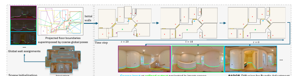
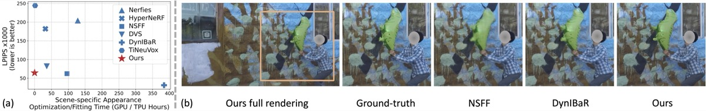
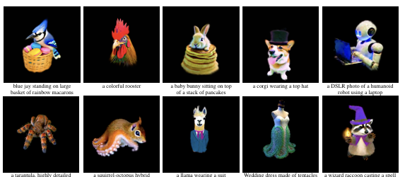
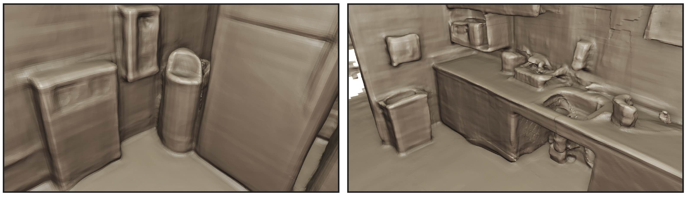
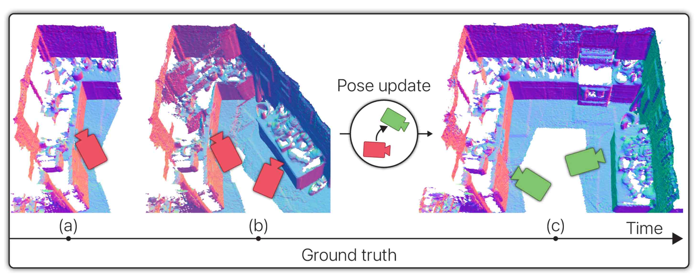
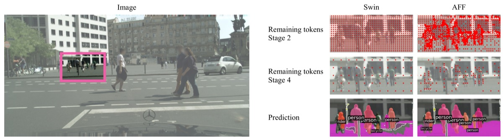
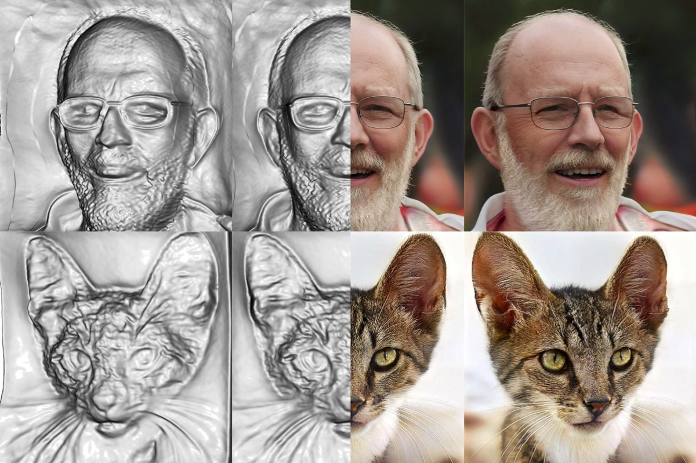
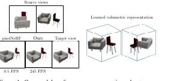
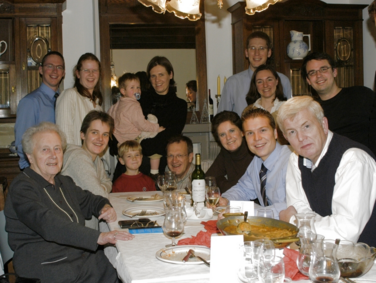

About
I am a Research Scientist at Apple AI/ML. I am also an affiliate associate professor of Computer Science and Engineering at the University of Washington. My research combines deep learning, computer graphics, and computer vision to create usable systems that allow people to better capture, understand, edit, and visualize the world.
I collaborate with the University of Washington Graphics and Imaging Laboratory, Reality Lab, and Facial Expression Research Group, where we combine artistic insight and deep learning techniques to better understand facial expressions and create amazing tools for artists.
Previously, I was a Research Scientist at Zillow where I helped create the state of the art in home interior capture and visualization. As a researcher at Amazon, I focused on 3D object creation from photos.
My Ph.D. work focused on interactive image-based modeling systems for architectural structures. I spent 10 years at Microsoft Research working on a variety of projects ranging from creating a platform for building virtual worlds to implementing microphone arrays.
Research
Publications, most recent first.






Generative Multiplane Images: Making a 2D GAN 3D-Aware
“What is really needed to make an existing 2D GAN 3D-aware?” We modify StyleGANv2 as little as possible, finding only two modifications are absolutely necessary: a multiplane image style generator branch, and a pose-conditioned discriminator.

Fast and Explicit Neural View Synthesis
Novel view synthesis from sparse source observations with an approach that is neither continuous nor implicit, challenging recent trends on view synthesis.


Deep Neural Network Approach for Annual Luminance Simulations
A data-driven approach for predicting annual luminance maps from a limited number of point-in-time high-dynamic-range images using a deep neural network.

Equivariant Neural Rendering
Learning neural scene representations directly from images, without 3D supervision, by ensuring the learned representation transforms like a real 3D scene.

Predicting Annual Equirectangular Panoramic Luminance Maps Using Deep Neural Networks

Computing Long-term Daylighting Simulations from High Dynamic Range Imagery Using Deep Neural Networks


Learning to Generate 3D Stylized Character Expressions from Humans

Computing Long-term Daylighting Simulations from High Dynamic Range Photographs Using Deep Neural Networks

Image-Based Remodeling

Image Stacks
Video Cubism
Graphical Enhancements for Voice Only Conference Calls
The Role of Eye Gaze in Avatar Mediated Conversational Interfaces
Teaching & Other
CSE 464B — Research Topics in Computer Animation
Introduces basic foundations of research in science and technology. Builds research skills by reading and evaluating papers along with designing and implementing research projects related to Animation, Graphics, and Machine Learning.
CSE 590M — Computer Music & Audio
I ran a music seminar in grad school — Computers & Music.

Contact
alex{at}colburn{dot}org
alexco{at}cs{dot}washington{dot}edu